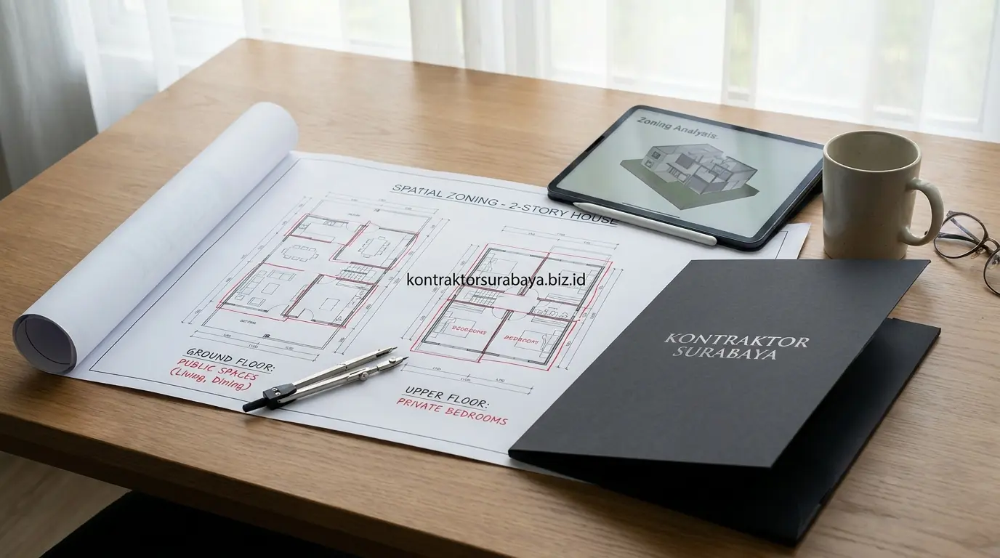

Membangun hunian impian bertingkat dua di kawasan perkotaan seperti Surabaya, Sidoarjo, dan Gresik merupakan langkah besar bagi pasangan keluarga muda yang baru berkembang. Keterbatasan luas lahan kavling perkotaan menuntut pemanfaatan luas vertikal secara maksimal. Namun, tantangan terbesar yang kerap dihadapi bukan hanya perkara fasad depan yang estetis, melainkan bagaimana menata sirkulasi dan zonasi ruang privat dan publik agar rumah tetap nyaman, fungsional, dan memberikan rasa aman bagi seluruh anggota keluarga.
Menggunakan jasa desain rumah 2 lantai Surabaya profesional dari tim arsitek berpengalaman adalah solusi cerdas untuk merencanakan tata ruang sejak tahap awal. Perencanaan yang matang mencegah terjadinya penyesalan tata letak setelah dinding bata terpasang, sekaligus memastikan struktur bangunan siap dieksekusi oleh tim kontraktor rumah tinggal Surabaya secara presisi dan efisien.
1. Kenapa Zonasi Ruang Penting pada Rumah 2 Lantai untuk Keluarga Muda
Zonasi yang jelas antara area publik dan privat membantu keluarga muda menjaga kenyamanan aktivitas sehari-hari, terutama saat menerima tamu, rekan kerja, maupun kerabat tanpa mengganggu ketenangan ruang istirahat anggota keluarga lainnya.
Rumah tanpa zonasi yang jelas berisiko membuat aktivitas keluarga dan tamu saling bercampur. Sebagai contoh, tamu yang sedang berkunjung dapat secara langsung melihat ke arah area kamar tidur atau dapur yang sedang berantakan, atau anak-anak yang baru selesai mandi harus melintasi ruang tamu untuk menuju kamarnya. Oleh karena itu, perencanaan zonasi sejak tahap tahapan proses desain arsitek menjadi fondasi penting demi kenyamanan dan ketenangan jangka panjang penghuni rumah.
2. Penempatan Fungsi Ruang Publik di Lantai Dasar
Ruang tamu, ruang makan, dapur, dan kamar mandi tamu adalah empat fungsi ruang publik yang umumnya ditempatkan di lantai dasar rumah 2 lantai:
- Ruang Tamu & Foyer: Ditempatkan paling dekat dengan pintu masuk utama agar mudah diakses tamu tanpa harus melewati area privat keluarga di bagian dalam.
- Ruang Makan Terbuka (Open Space): Diletakkan berdekatan dengan dapur untuk memudahkan alur menyajikan hidangan serta menciptakan interaksi sosial yang hangat antar penghuni saat santap bersama.
- Dapur Bersih & Dapur Kotor: Ditempatkan di lantai dasar mengingat kebutuhan akses suplai logistik dari carport serta kemudahan pembuangan sampah dan sirkulasi udara ke arah taman belakang.
- Kamar Mandi / Powder Room Tamu: Menyediakan fasilitas sanitasi di lantai dasar sehingga tamu tidak perlu naik ke lantai atas untuk meminjam kamar mandi.
3. Penempatan Fungsi Ruang Privat di Lantai Atas
Kamar tidur utama (master bedroom), kamar tidur anak, ruang kerja atau belajar (home office), dan kamar mandi dalam adalah empat fungsi ruang privat yang sangat ideal dipusatkan di lantai atas rumah 2 lantai:
- Kamar Tidur Utama: Berada di lantai atas memberikan tingkat privasi maksimal dan isolasi suara yang lebih baik dari kebisingan jalanan depan maupun aktivitas di lantai dasar.
- Kamar Anak yang Terintegrasi: Ditempatkan berdekatan dengan kamar orang tua guna memudahkan pengawasan tumbuh kembang balita dan anak-anak di malam hari.
- Ruang Kerja & Belajar Tenang: Memberikan suasana konsentrasi tinggi bagi orang tua yang bekerja dari rumah (WFH) tanpa terdistraksi hiruk-pikuk tamu di ruang depan.
- Kamar Mandi Dalam & Walk-in Closet: Menambah kenyamanan personal dan privasi berpakaian anggota keluarga, yang dapat dipadukan dengan konsep jasa desain interior custom bergaya modern.
4. Komparasi Zonasi Ruang Rumah 2 Lantai Ideal vs Konvensional
Untuk memahami keuntungan penerapan zonasi arsitektural yang dirancang oleh arsitek bersertifikat, berikut tabel perbandingan antara denah rumah berzonasi matang dengan denah konvensional:
| Aspek Evaluasi Denah | Zonasi Modern Terencana (Arsitek) | Denah Konvensional Tanpa Zonasi | Manfaat bagi Keluarga Muda |
|---|---|---|---|
| Privasi Area Kamar | Terisolasi penuh di lantai atas, pintu tidak terlihat dari pintu masuk | Kamar tidur berhadapan langsung dengan ruang tamu / lorong utama | Keluarga bebas beristirahat tanpa khawatir terganggu tamu. |
| Aksesibilitas Tamu | Tamu hanya beraktivitas di zona publik lantai 1 (foyer & powder room) | Tamu sering melintasi area makan/dapur untuk mencari toilet | Menjaga batas kesopanan dan kerapian area dalam rumah. |
| Sirkulasi Udara & Cahaya | Dioptimalkan lewat void bertingkat, skylight, dan inner courtyard | Ruang tengah gelap dan pengap karena tertutup sekat massif | Menghemat energi listrik AC dan lampu di siang hari. |
| Efisiensi Biaya Bangun | Perletakan kamar mandi segaris vertikal (plumbing stack) | Titik pipa air menyebar acak, menambah biaya instalasi pipa MEP | Menekan rincian pada RAB estimasi biaya konstruksi. |

5. Bagaimana Tangga Menjadi Pemisah Alami Zona Publik dan Privat?
Posisi tangga yang tidak langsung terlihat dari pintu masuk ruang tamu membantu menciptakan transisi visual yang halus antara area publik di lantai dasar dan area privat di lantai atas.
Penempatan tangga yang strategis—misalnya di area lorong transisi samping atau di balik partisi kisi-kisi kayu estetis—menjaga kesan privasi tanpa perlu menambahkan pintu sekat yang masif dan kaku. Dengan tata letak ini, anggota keluarga yang ingin turun dari lantai atas ke dapur tidak akan canggung meskipun di ruang tamu sedang ada orang luar. Desain tangga yang ergonomis dengan kemiringan yang tepat juga meningkatkan faktor keselamatan anak-anak saat beraktivitas naik-turun tangga setiap hari.
6. Pertimbangan Tambahan untuk Keluarga dengan Anak Kecil atau Lansia
Keluarga muda yang sering dikunjungi oleh orang tua/mertua lansia, atau yang sedang merencanakan momongan, perlu mempertimbangkan penempatan satu kamar tidur serbaguna di lantai dasar agar mobilitas harian tidak terlalu bergantung pada tangga setiap saat.
Meski konsep zonasi umum menempatkan seluruh kamar tidur di lantai atas, kebutuhan aksesibilitas jangka panjang (universal design) perlu dipikirkan sejak awal. Kamar tidur di lantai bawah ini bisa difungsikan sebagai ruang bermain anak saat ini, kamar tamu lansia saat orang tua berkunjung, atau kamar pemulihan saat ada anggota keluarga yang cedera. Ketika struktur pondasi direncanakan dengan SOP pondasi cakar ayam bertingkat yang kokoh, penataan ruang bawah dapat dimodifikasi secara fleksibel di masa depan.
7. Elemen Desain yang Mendukung Interaksi Keluarga Tanpa Mengurangi Privasi
Void penghubung antar lantai, balkon dalam yang menghadap ruang keluarga, ruang keluarga di posisi tengah, dan jendela penghubung antar lantai adalah empat elemen desain favorit arsitek untuk mendukung kehangatan interaksi tanpa mengorbankan privasi ruang kamar:
- Void Plafon Tinggi (High Ceiling Void): Membuka koneksi visual dan sirkulasi suara antara lantai 1 dan mezzanine lantai 2, membuat rumah terasa megah, sejuk, dan lapang.
- Balkon Dalam (Indoor Mezzanine Balcony): Menghadap ke arah ruang tengah keluarga, memberi kesempatan orang tua menyapa anak-anak yang bermain di bawah tanpa harus melangkah turun.
- Ruang Keluarga di Titik Sentral: Menjadi magnet berkumpulnya keluarga setelah jam kerja dan sekolah selesai, memisahkan ruang hiburan dari kamar tidur.
- Bukaan Jendela Silang (Cross Ventilation): Menghubungkan aliran udara alami dari taman depan hingga taman belakang, mengurangi kelembapan khas iklim tropis pesisir Surabaya.
8. Kesalahan Umum dalam Merancang Zonasi Rumah 2 Lantai
Dalam praktiknya, masih banyak pemilik rumah yang melakukan kesalahan desain tata ruang fatal karena membangun tanpa bantuan gambar kerja arsitektur yang teruji:
- Menempatkan Kamar Tidur Terlalu Dekat Ruang Tamu: Mengakibatkan penghuni kamar terganggu oleh suara percakapan tamu dan kehilangan privasi saat membuka pintu kamar.
- Tidak Memperhitungkan Sirkulasi Servis Tamu: Menempatkan toilet di dekat area memasak atau dapur kotor sehingga tamu harus melintasi dapur keluarga untuk mencuci tangan.
- Mengabaikan Kebutuhan Aksesibilitas Lansia: Seluruh kamar dipaksakan di lantai 2 sehingga menyulitkan mobilitas orang tua saat datang menginap.
- Tidak Menyediakan Ruang Transisi (Foyer) yang Jelas: Pintu utama langsung berhadapan dengan sofa tengah rumah, membuat privasi penghuni langsung terekspos saat pintu dibuka.
"Rumah 2 lantai yang ideal bukan diukur dari seberapa megah fasad luarnya, melainkan dari seberapa cerdas denahnya menjaga keintiman keluarga di lantai atas tanpa mengurangi keramahan menyambut tamu di lantai bawah." — Erlang Sinatrya, Principal Architect & Project Lead Kontraktor Surabaya
Setiap keluarga memiliki pola kebiasaan dan jumlah anggota yang unik. Konsultasikan denah rumah impian Anda bersama tim jasa arsitek Surabaya profesional kami untuk mendapatkan tata letak ruang presisi, gambar 3D fasad fotorealistik, dan perhitungan Surat Penawaran Harga (SPH) yang transparan. Jelajahi karya rumah bertingkat kami di halaman galeri portofolio proyek atau pelajari lebih lanjut layanan lengkap pada halaman layanan arsitektur dan konstruksi kami.